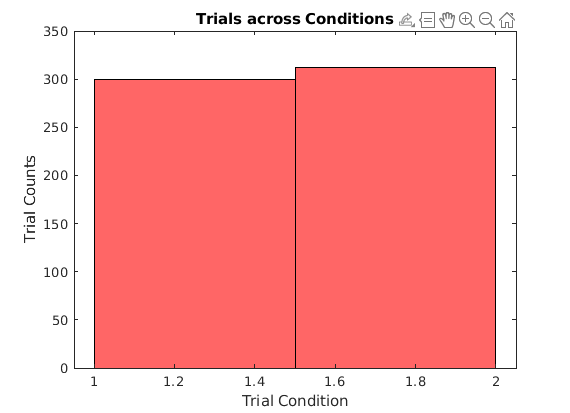
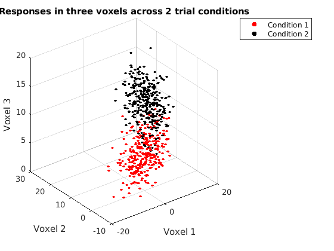
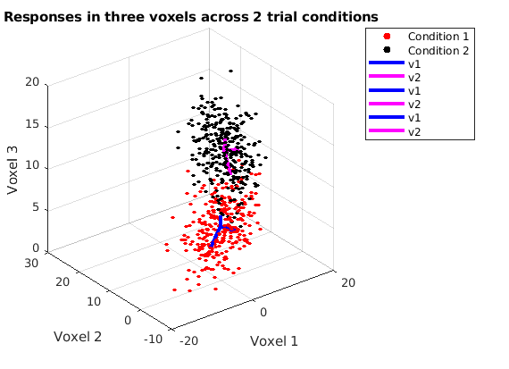
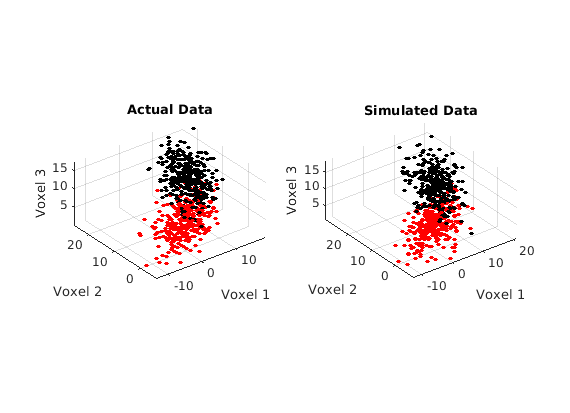

Contents
clear; close all; clc;
a)
load('experimentData.mat') fig1 = figure(); histogram(trialConds, 2, 'FaceColor', 'r'); xlabel('Trial Condition') ylabel('Trial Counts') title('Trials across Conditions')
Both trial conditions seem to have roughly equal number of trials.
Dividing the data based on the trial conditions
cond1_index = find(trialConds == 1); cond2_index = find(trialConds == 2); cond1_data = data(cond1_index, :); cond2_data = data(cond2_index, :); sprintf('For condition 1, %d trials were completed', length(cond1_data)) sprintf('For condition 2, %d trials were completed', length(cond2_data))
ans =
'For condition 1, 300 trials were completed'
ans =
'For condition 2, 312 trials were completed'
Making a scatter plot from the divided data.
fig2 = figure(); scatter3(cond1_data(:, 1), cond1_data(:, 2), cond1_data(:, 3), 10, 'r', ... 'filled', 'DisplayName', 'Condition 1') hold on; scatter3(cond2_data(:, 1), cond2_data(:, 2), cond2_data(:, 3), 10, 'k', ... 'filled', 'DisplayName', 'Condition 2') legend(); xlabel('Voxel 1'); ylabel('Voxel 2'); zlabel('Voxel 3'); title('Responses in three voxels across 2 trial conditions')
The response clouds for both the conditions appear separated and hence appear to exhibit a substantial difference across the two conditions. Specifically, trials from condition 2 have higher values in each of the three voxels compared to the trials from condition 1. Both the response clouds appear ellipsoidal in shape and hence they can be modelled as 3-D normal distributions.
b)
global cond1_mean cond2_mean cond1_covar cond2_covar cond1_mean = mean(cond1_data, 1); % Mean for condition 1 cond2_mean = mean(cond2_data, 1); % Mean for condition 2 cond1_centered = cond1_data - repmat(cond1_mean, length(cond1_data), 1); % Centering data for condition 1 cond2_centered = cond2_data - repmat(cond2_mean, length(cond2_data), 1); % Centering data for condition 2 cond1_covar = (1/length(cond1_data)) * (cond1_centered' * cond1_centered) % Computing covariance for condition 1 cond1_cov = cov(cond1_data) % Computing covariance for condition 1 cond2_covar = (1/length(cond2_data)) * (cond2_centered' * cond2_centered) % Computing covariance for condition 2 cond2_cov = cov(cond2_data) % Computing covariance for condition 2
cond1_covar =
26.0444 9.7876 4.8923
9.7876 15.6932 3.3961
4.8923 3.3961 3.3716
cond1_cov =
26.1315 9.8203 4.9087
9.8203 15.7457 3.4075
4.9087 3.4075 3.3829
cond2_covar =
12.8625 8.0714 2.9013
8.0714 26.8591 6.2990
2.9013 6.2990 4.4109
cond2_cov =
12.9038 8.0973 2.9106
8.0973 26.9454 6.3192
2.9106 6.3192 4.4251
We can see that the covariances computed for both conditions using matrix multiplication or using cov function are similar to each other. The covariance matrices of condition 1 and condition 2 appear different from each other. Specifically for condition 1, there is a higher variance along voxel 1, followed by voxel 2 and the smallest variance in voxel 3. However, for condition 2, the highest variance exists in voxel 2 followed by voxel 1 and the smallest in voxel 3. We can also see that for condition 1, there is a higher covariance between voxels 1 and 2, followed by voxels 1 and 3 and the smallest between voxels 2 and 3. On the other hand, for condition 2, there is a higher covariance between voxels 1 and 2, followed by voxels 2 and 3 and the smallest between voxels 1 and 3. Therefore, clearly, there is a difference between the covariance matrices of condition 1 and 2, but they are not wildly different as the scale of variances and covariances is the same.
c)
Computing SVD from covariance matrices gives S and V, where the columns of V hold eigen vectors and the S stores the corresponding eigen values along its diagonal. The magnitude of the scaling factor for each vector is the square-root of the eigen value. In order to translate each scaled vector to the center of the response cloud, mean is added to them using repmat.
[U1, S1, V1] = svd(cond1_covar); % svd of covariance for condition 1 [U2, S2, V2] = svd(cond2_covar); % svd of covariance for condition 2 sing_vecs1 = sqrt(S1) * V1' + repmat(cond1_mean, length(S1), 1); % computing singular vectors for condition 1 sing_vecs2 = sqrt(S2) * V2' + repmat(cond2_mean, length(S2), 1); % computing singular vectors for condition 2 fig3 = figure(); scatter3(cond1_data(:, 1), cond1_data(:, 2), cond1_data(:, 3), 10, 'r', ... 'filled', 'DisplayName', 'Condition 1') hold on; scatter3(cond2_data(:, 1), cond2_data(:, 2), cond2_data(:, 3), 10, 'k', ... 'filled', 'DisplayName', 'Condition 2') for i = 1:3 mu1 = cond1_mean; plot3([mu1(1), sing_vecs1(i, 1)], [mu1(2), sing_vecs1(i, 2)], ... [mu1(3), sing_vecs1(i, 3)], 'b', 'LineWidth', 3, 'DisplayName', 'v1') % Plotting singular vectors for conditon 1 mu2 = cond2_mean; plot3([mu2(1), sing_vecs2(i, 1)], [mu2(2), sing_vecs2(i, 2)], ... [mu2(3), sing_vecs2(i, 3)], 'm', 'LineWidth', 3, 'DisplayName', 'v2') % Plotting singular vectors for condition 2 end legend(); xlabel('Voxel 1'); ylabel('Voxel 2'); zlabel('Voxel 3'); title('Responses in three voxels across 2 trial conditions')
As opposed to the differences in the covariance matrices, the singular values of the two conditions appear similar to each other. This implies that though there are difference in the responses across the conditions, both of these responses original from a similar distribution spaces across by their different means and covariance matrices but aligned along similar direction in the 3-D space.
d)
numTrials1 = length(cond1_data);
numTrials2 = length(cond2_data);
simResponses = odorExperiment(numTrials1, numTrials2); % Simulating the data
cond1_sim = simResponses(1:numTrials1, :); % Simulated data for condition 1 cond2_sim = simResponses(numTrials1+1:end, :); % Simulated data for condition 2
Making a scatter plot from the divided data.
fig4 = figure(); subplot(1, 2, 1) % Scatterplot for actual data scatter3(cond1_data(:, 1), cond1_data(:, 2), cond1_data(:, 3), 10, 'r', ... 'filled', 'DisplayName', 'Condition 1') hold on; scatter3(cond2_data(:, 1), cond2_data(:, 2), cond2_data(:, 3), 10, 'k', ... 'filled', 'DisplayName', 'Condition 2') xlabel('Voxel 1'); ylabel('Voxel 2'); zlabel('Voxel 3'); title('Actual Data') axis equal subplot(1, 2, 2) % Scatterplot for simulated data scatter3(cond1_sim(:, 1), cond1_sim(:, 2), cond1_sim(:, 3), 10, 'r', ... 'filled', 'DisplayName', 'Condition 1') hold on; scatter3(cond2_sim(:, 1), cond2_sim(:, 2), cond2_sim(:, 3), 10, 'k', ... 'filled', 'DisplayName', 'Condition 2') xlabel('Voxel 1'); ylabel('Voxel 2'); zlabel('Voxel 3'); title('Simulated Data') axis equal
From the graphs, we can see that the plots for the actual data and the simulated data are similar to each other. Therefore, the simulated data is a good characterization of the real amygdala voxel responses.
Functions
function simResponses = odorExperiment(numTrials1, numTrials2) % The function produces simulated responses by drawing samples for each % condition from their respective 3-D Normal distributions using nRandn % functions given the mean and the covariance of the distribution. global cond1_mean cond2_mean cond1_covar cond2_covar simResponses1 = nRandn(cond1_mean, cond1_covar, numTrials1); simResponses2 = nRandn(cond2_mean, cond2_covar, numTrials2); simResponses = [simResponses1; simResponses2]; end function samples = nRandn(mean, cov, num) % The function draws samples from an N-dimensional normal distribution. % It does so my first drawing samples from an N-dimensional normal % distribution of 0 mean and identity covariance matrix. It then % transforms the data using a matrix M to have the covariance "cov". % Lastly, it translates the data to have the mean "mean". N = length(mean); [V, D] = eig(cov); % Eigen value decomposition of covariance matrix M = V * sqrt(D); % Transformation matrix is given as product of V and square-root of eigenvalues samp = randn(num, N); % Drawing samples from N-dimensional normal distribution with mean 0 and identity covariance matrix samples = repmat(mean, num , 1) + samp * M'; end